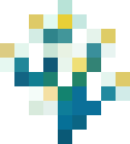

Double doors open and close together, click or redstone one side and the matching half follows.

Blume
Vanilla-friendly ecology and quality-of-life for Paper servers.
Quality of Life
Paths are naturally formed where players walk.
Items from death stick around much longer before despawning (4 hours).
No more Too Expensive! on the anvil for normal repairs and upgrades, costs stay within a server cap (inf by default).
Right-click a fully grown crop to harvest and replant in one action.
Built paths feel faster: dirt, gravel, and coarse dirt give a small movement boost; dirt paths are faster still.
Explosions still happen, but destroyed blocks rebuild over time with a particle effect instead of leaving permanent craters (adapted from vane).
Ecology
Breaking grass can drop mixed seeds instead of wheat, planting these seeds on farmland will mostly plant grass, sometimes you can get a random crop.
Carrots now have a carrot_seeds item, you can still plant normal carrots.
Plant potato seeds on farmland like wheat, or stick with vanilla potatoes. Crops grown from seeds can poison the whole harvest; vanilla-planted potatoes are safe.
Crops appear naturally in the world on grass and dirt in patches. You still need farmland to plant seeds yourself.
Plains fill in over time, short grass grows on grass blocks, tall grass follows.
Flowers, bees, and healthy farms gently boost nearby crop growth over time.
Well-kept pastures mean happier animals and better yields. Grass, water, shelter, and good flooring all matter, neglect then you will be penalized.
Enchantments
Ores drop smelted when mined.
Mine an ore block and connected matching ores break in a chain.
Break one log and it will chop the whole tree down and replant the sapling.
Harvest crops in an area around you, higher enchant levels reach further.
Tools and gear stop losing durability. Super rare.
Administration
When an OPed player runs a command everyone sees it.
New players join in look-but-don't-touch mode until verified, no breaking blocks, moving entities, or griefing until someone vouches for them.
Trusted players can un-graylist someone with /vouch. Every vouch is logged for accountability.